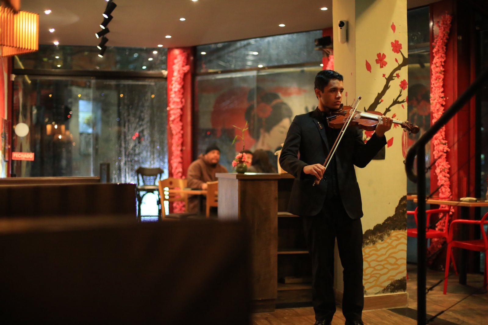
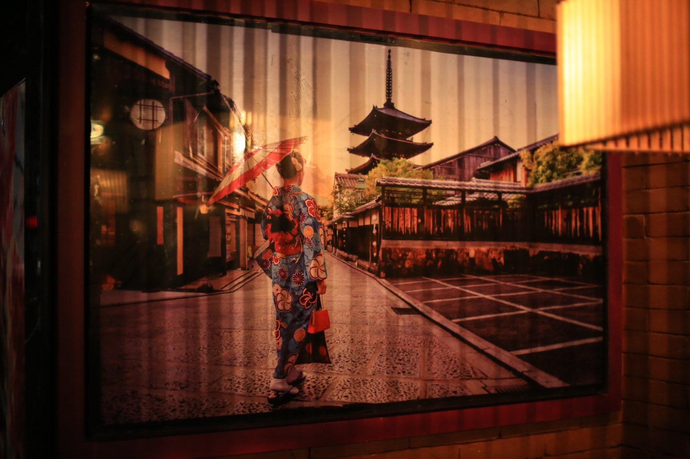
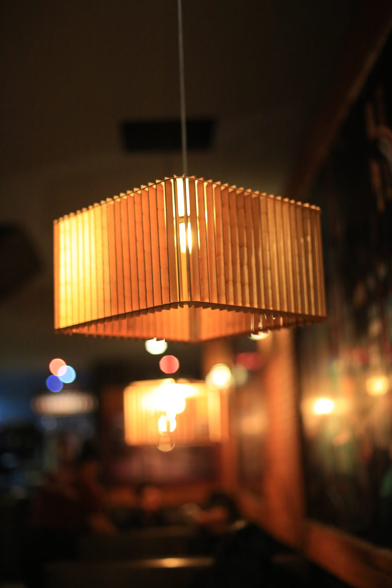
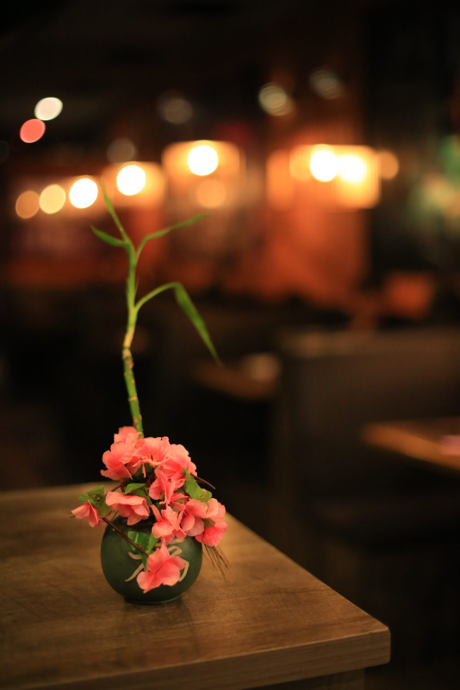
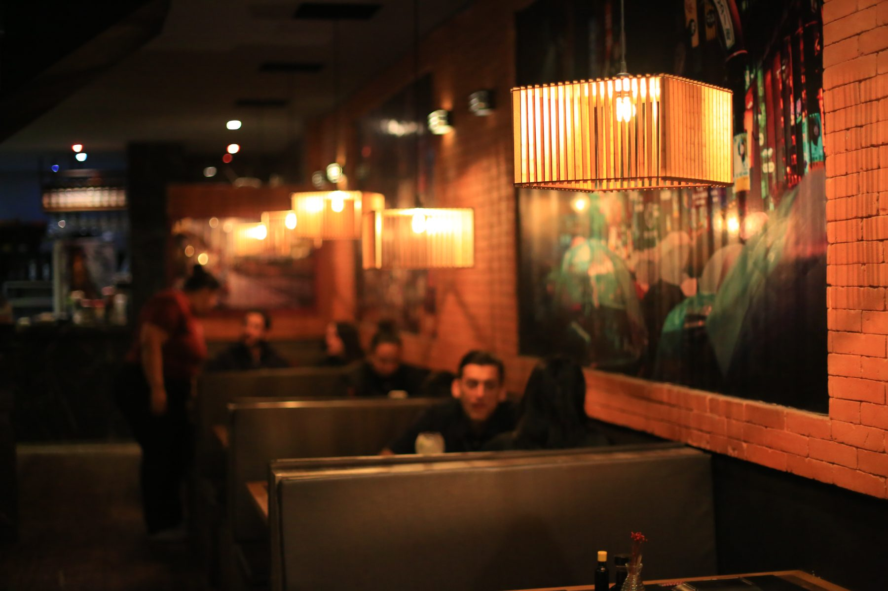
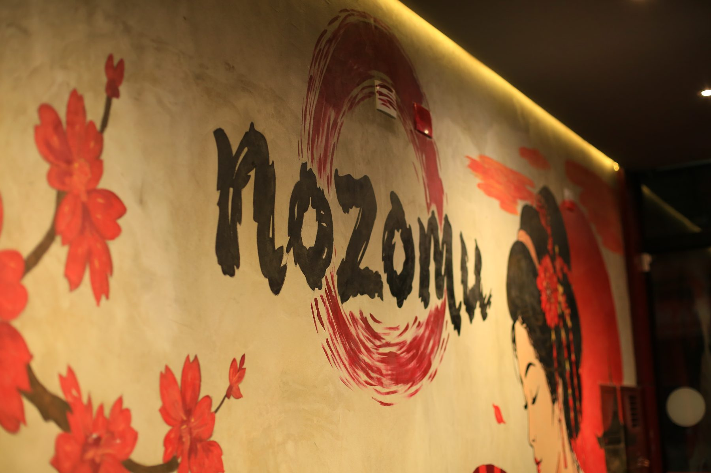
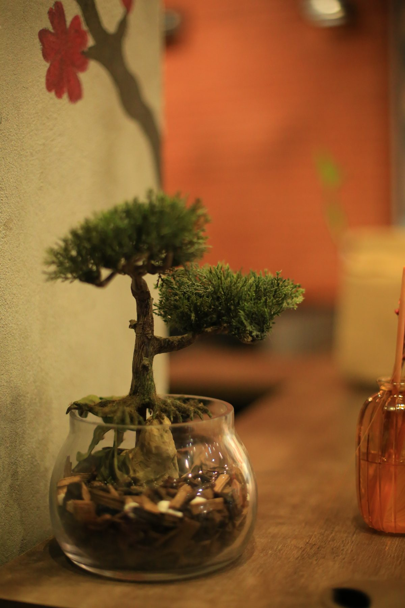
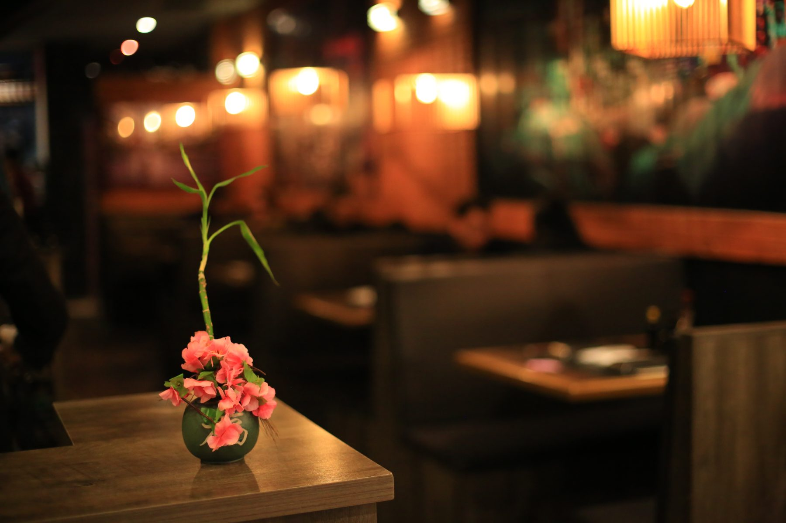

A casa
O ambiente
Luz baixa, madeira, tijolo e murais pintados à mão. Quatro espaços para escolher — e violino ao vivo nas noites do rodízio.
Luz baixa, madeira, tijolo e murais pintados à mão. Quatro espaços para escolher — e violino ao vivo nas noites do rodízio.

Mesas e boxes sob luminárias de bambu, murais pintados à mão e tijolo aparente. O coração do restaurante.

Mesas junto ao vidro, com cobertura. Boa para noites de chuva e para quem prefere um ar mais aberto.
Mais silencioso e reservado, com vista para o salão. Ideal para grupos e comemorações.

Brinquedoteca com pula-pula à vista das mesas: as crianças brincam enquanto os adultos jantam com calma.

Violino ao vivo circulando pelo salão nas noites do rodízio.

Quadros de Kyoto, cerejeiras e o monte Fuji pintados na parede: a decoração é parte do jantar.









Atendemos somente com reserva. Sem cobrança antecipada — nossa equipe confirma pelo WhatsApp.